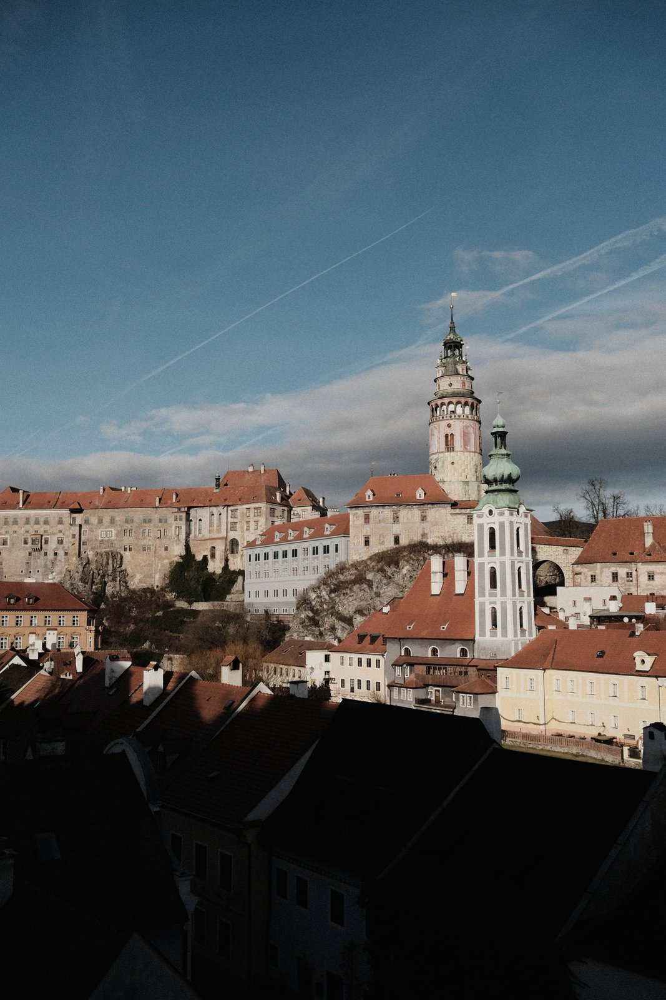
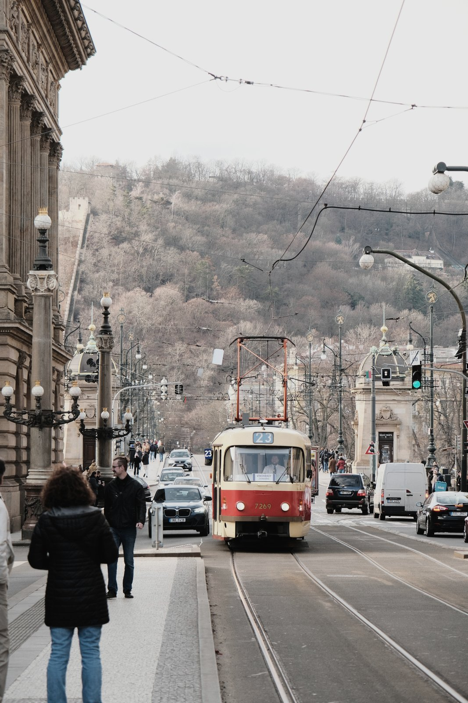
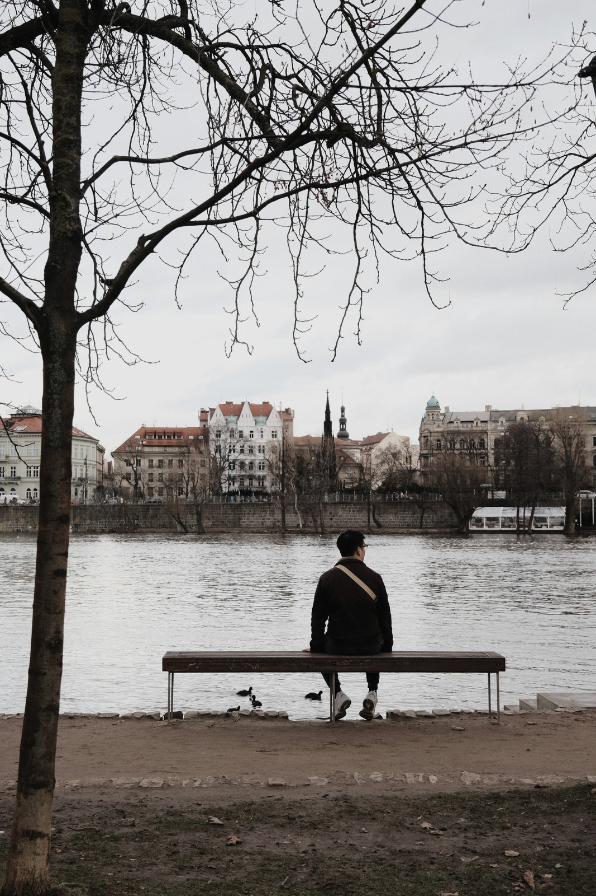
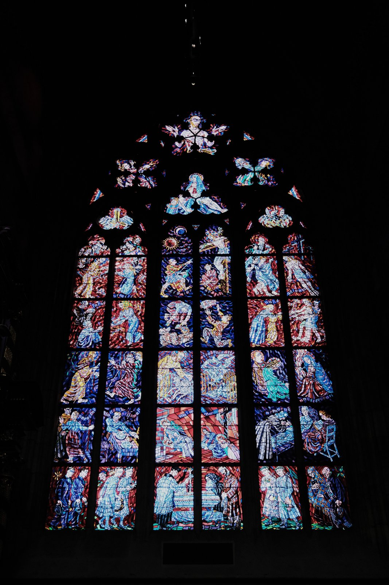

2024 Jan / Czechia / #旅途
布拉格跨年
在布拉格跨年其實有點不真實。老城、河岸、石板路都太像電影場景，但真正留下來的不是那種很壯觀的感覺，而是冬天裡慢慢走路的聲音。
在老城等新年
跨年那幾天一直在走路，走過橋、走進巷子、再走回河邊。有時候也沒有特別要去哪，只是覺得這座城市很適合讓人把時間花掉。
冬天的顏色
布拉格的冬天不是很明亮的那種美，它比較灰、比較舊，也比較安靜。照片回看起來有點冷，但我滿喜歡那種冷。



